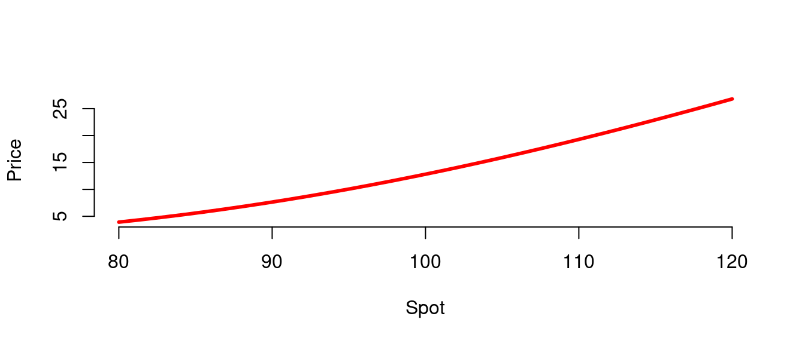

library(fOptions)
library(fExoticOptions)
library(fInstrument)
library(DynamicSimulation)
library(empfin)
library(plotly){r tufte::newthought("This")} chapter provides a tutorial and explains the design of the object framework that has been build on top of the Rmetrics library.
As mentioned earlier, this layer is meant to hide
most of the implementation details, and allows us to focus on the key features of the
financial instruments and models.
The reader is encouraged to work through the examples, but the sections on design and implementation can be skipped.
The object framework involves two main entities:
Each entity is now described and illustrated.
As mentioned, the purpose of the class is to create a layer of abstraction over the large variety of pricing models found in Rmetrics. With this class, we can express calculation algorithms in a generic manner. This is best explained by an example.
Consider a portfolio made of two options, a vanilla European call and a binary (cash-or-nothing) option, both written on the same underlying asset. We would like to compute the NPV and delta of this portfolio. Let’s contrast the process, first performed with the Rmetrics functions, and then with the class.
Starting with the Rmetrics functions, you first compute the price and delta of the European call:
p <- vector(mode = "numeric", length = 2)
d <- vector(mode = "numeric", length = 2)p <- vector(mode = "numeric", length = 2)
cp <- "c"
Spot <- 100
Strike <- 100
Ttm <- 1
int.rate <- 0.02
div.yield <- 0.02
sigma <- 0.3
p[1] <- GBSOption(TypeFlag = cp, S = Spot, X = Strike,
Time = Ttm, r = int.rate, b = int.rate - div.yield,
sigma = sigma)@price
d[1] <- GBSGreeks(Selection = "delta", TypeFlag = cp,
S = Spot, X = Strike, Time = Ttm, r = int.rate,
b = int.rate - div.yield, sigma = sigma)Perform the same calculation for the binary option. The delta is computed by finite difference.
p <- vector(mode = "numeric", length = 2)
K <- 1
p[2] <- CashOrNothingOption(TypeFlag = cp, S = Spot,
X = Strike, K = K, Time = Ttm, r = int.rate, b = int.rate -
div.yield, sigma = sigma)@price
h <- Spot * 0.001
dh <- CashOrNothingOption(TypeFlag = cp, S = c(Spot +
h, Spot - h), X = Strike, K = K, Time = Ttm, r = int.rate,
b = int.rate - div.yield, sigma = sigma)@price
d[2] <- diff(dh)/(2 * h)Finally, sum both vectors to get the portfolio NPV and delta.
p <- vector(mode = "numeric", length = 2)
print(paste("Price:", round(sum(p), 2), "Delta:", round(sum(d),
3)))## [1] "Price: 0 Delta: 0.536"With the class, the calculation steps are quite different.
You first create a vanilla instrument with the function:
dtExpiry <- myDate("01jan2011")
underlying <- "IBM"
Strike <- 100
K <- 1
b <- fInstrumentFactory("vanilla", quantity = 1, params = list(cp = "c",
strike = Strike, dtExpiry = dtExpiry, underlying = underlying,
discountRef = "USD.LIBOR", trace = FALSE))Next, use again the to create the binary option:
v <- fInstrumentFactory("binary", quantity = 1, params = list(cp = "c",
strike = Strike, dtExpiry = dtExpiry, K = K, underlying = underlying,
discountRef = "USD.LIBOR", trace = FALSE))Insert the relevant market data into a (this will be explained in the next section):
base.env <- DataProvider()
dtCalc <- myDate("01jan2010")
setData(base.env, underlying, "Price", dtCalc, 100)
setData(base.env, underlying, "DivYield", dtCalc, div.yield)
setData(base.env, underlying, "ATMVol", dtCalc, sigma)
setData(base.env, "USD.LIBOR", "Yield", dtCalc, int.rate)Construct a portfolio, as a list of objects:
portfolio = c(v, b)and finally compute the price and delta of the portfolio:
price <- sum(sapply(portfolio, function(a) getValue(a,
"Price", dtCalc, base.env)))
delta <- sum(sapply(portfolio, function(a) getValue(a,
"Delta", dtCalc, base.env)))
print(paste("Price:", round(price, 2), "Delta:", round(delta,
3)))## [1] "Price: 13.31 Delta: 0.599"The method is simply a switch that delegates the object instantiation the the concrete subclasses of . The following code fragment is extracted from the file in package :
fInstrumentFactory <- function(type, quantity, params) {
switch(toupper(type), VANILLA = Vanilla(quantity,
params), BINARY = Binary(quantity, params),
ASIAN = Asian(quantity, params), STANDARDBARRIER = StandardBarrier(quantity,
params))
}Again, this method simply delegates to the concrete classes the requested calculation:
setMethod(f = "getValue", signature = signature("fInstrument"),
definition = function(object, selection, dtCalc,
env = NULL) {
res <- NULL
res <- switch(toupper(selection), PRICE = object@p(dtCalc,
env), DELTA = object@d(dtCalc, env), GAMMA = object@g(dtCalc,
env), VEGA = object@v(dtCalc, env))
return(res * object@quantity)
})As an illustration, the price calculation for vanilla options is implemented as follows in :
getP <- function(dtCalc, env) {
Spot <- getData(env, Underlying, "Price", dtCalc)
s <- getData(env, Underlying, "ATMVol", dtCalc)
r <- getData(env, df, "Yield", dtCalc)
b <- getData(env, Underlying, "DivYield", dtCalc)
t <- tDiff(dtCalc, dtExpiry)
if (trace) {
print(paste("Calling GBSOption with Spot=",
Spot, "Strike=", Strike, "t=", t, "r=",
r, "b=", b, "sigma=", s))
}
GBSOption(TypeFlag = cp, S = Spot, X = Strike,
Time = t, r = r, b = b, sigma = s)@price
}The actual calculation being performed by the Rmetrics function. The model can be easily extended to accommodate other instruments.
The class is a container of market data, from which the pricing algorithm will fetch the necessary market information, as illustrated in the code fragment above. We first describe the representation of market data, then the algorithm for searching data in a .
The model for market data is strongly inspired by M. Folwer (1996Fowler, Martin. 1996. Analysis Patterns: Reusable Object Models. Addison-Wesley.). To summarize, a piece of market data is modeled as an observed phenomenon on a financial instrument. Therefore, every market data item is identified by three attributes:
In order to optimize storage, the data is stored in a hash table. The first two attributes are combined to created the key, and the data for all observation dates is stored as a time series, with one column for actual data, and many additional columns when performing a simulation.
The inherits from the built-in class. In particular, it inherits the parent/child relationship: if a has a parent, the data not found in the child environment is fetched from the parent, if possible, or from the grand-parent, and so forth.
This is useful when performing a scenario analysis where only a few variables are modified: The data held constant is stored in the parent scenario, and the modified data is stored in the child scenario which is passed as argument. This scheme is illustrated by the following example.
Let’s define a vanilla option:
dtExpiry <- myDate("01jan2011")
underlying <- "IBM"
K <- 100
a <- fInstrumentFactory("vanilla", quantity = 1,
params = list(cp = "c", strike = K, dtExpiry = dtExpiry,
underlying = underlying, discountRef = "USD.LIBOR",
trace = FALSE))and populate a DataProvider with the necessary market data:
base.env <- DataProvider()
dtCalc <- myDate("01jan2010")
setData(base.env, underlying, "Price", dtCalc, 100)
setData(base.env, underlying, "DivYield", dtCalc, 0.02)
setData(base.env, underlying, "ATMVol", dtCalc, 0.3)
setData(base.env, "USD.LIBOR", "Yield", dtCalc, 0.02)The NPV of the derivative is obtained by:
getValue(a, "Price", dtCalc, base.env)
[1] 12.82158Next, we investigate the relationship between the underlying price and the value of the derivative, by inserting a set of scenarios for the underlying asset price in a child :
sce <- t(as.matrix(seq(80, 120, length.out = 30)))
sce.env <- DataProvider(parent = base.env)
setData(sce.env, underlying, "Price", dtCalc, sce) Figure 1.1: Call Price as a function of spot value. Strike: 100, maturity: 1 Year
p <- getValue(a, "Price", dtCalc, sce.env)
plot(sce, p, type = "l", lwd = 3, xlab = "Spot",
ylab = "Price", bty = "n", col = "red")